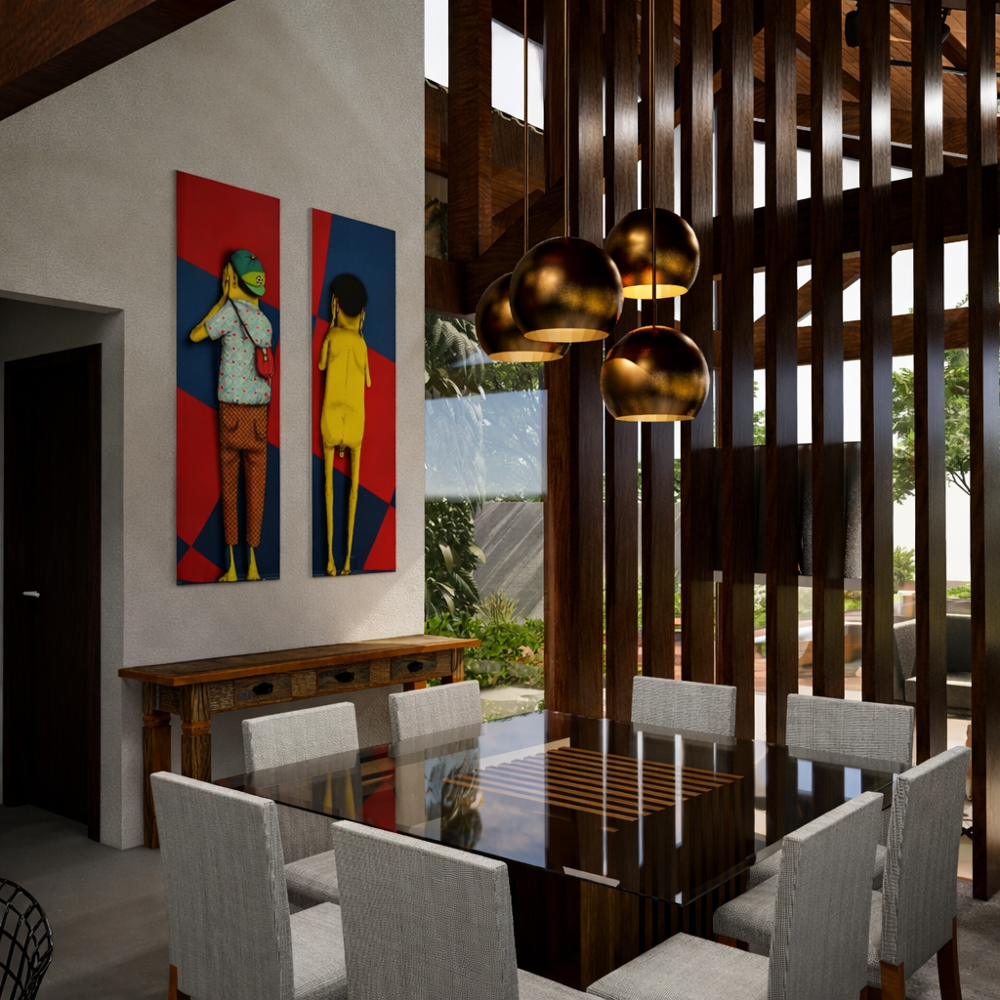
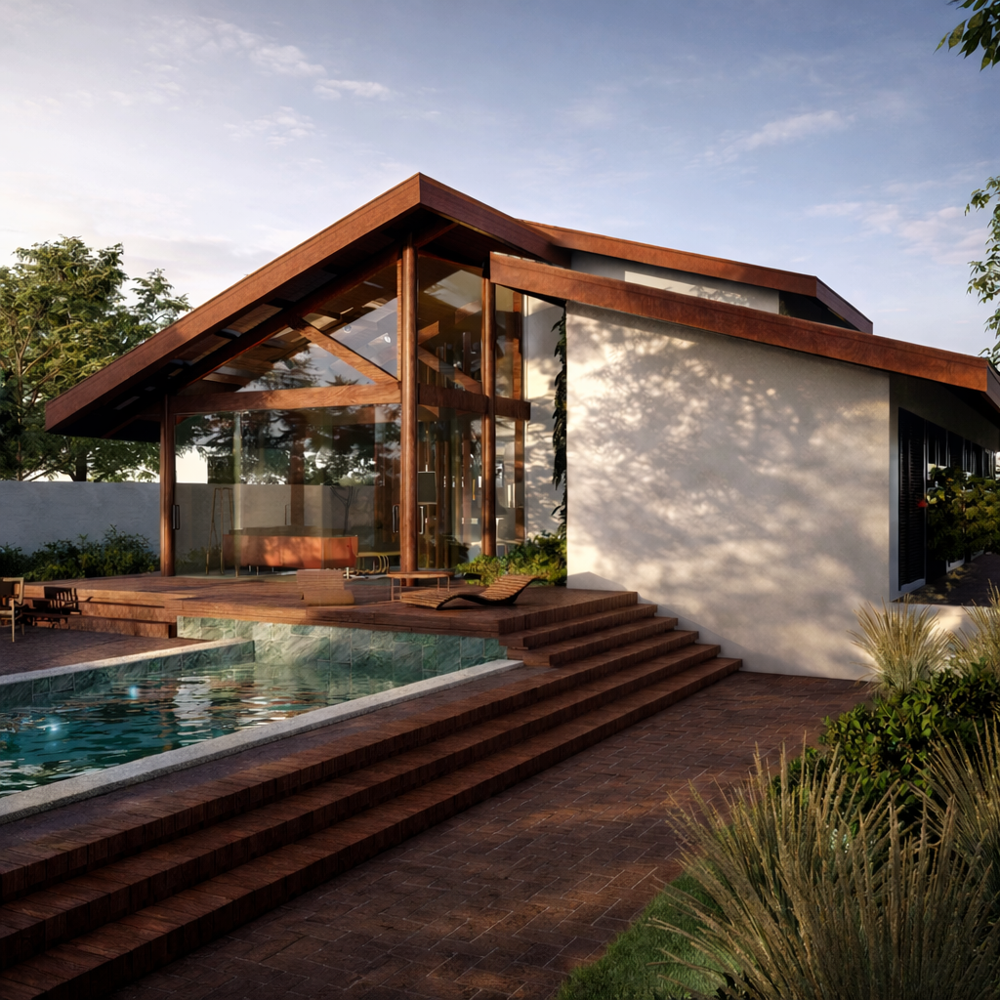
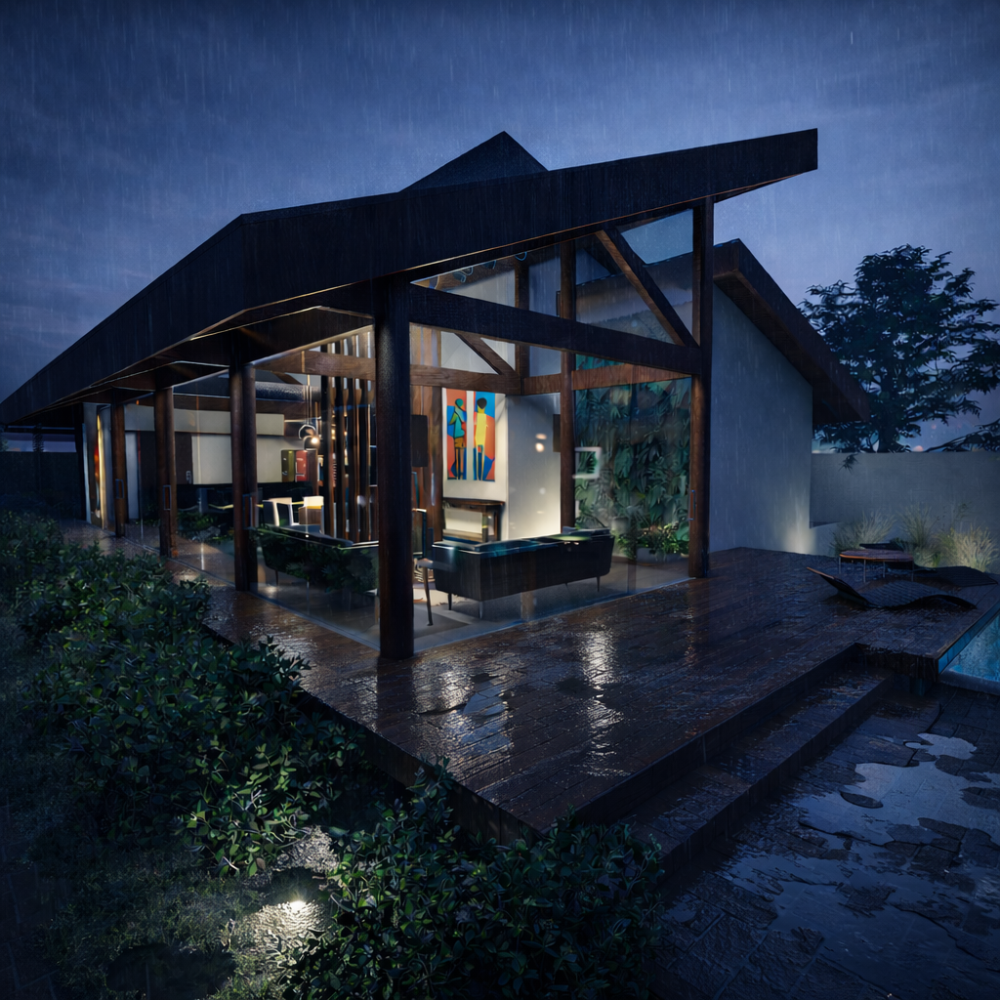
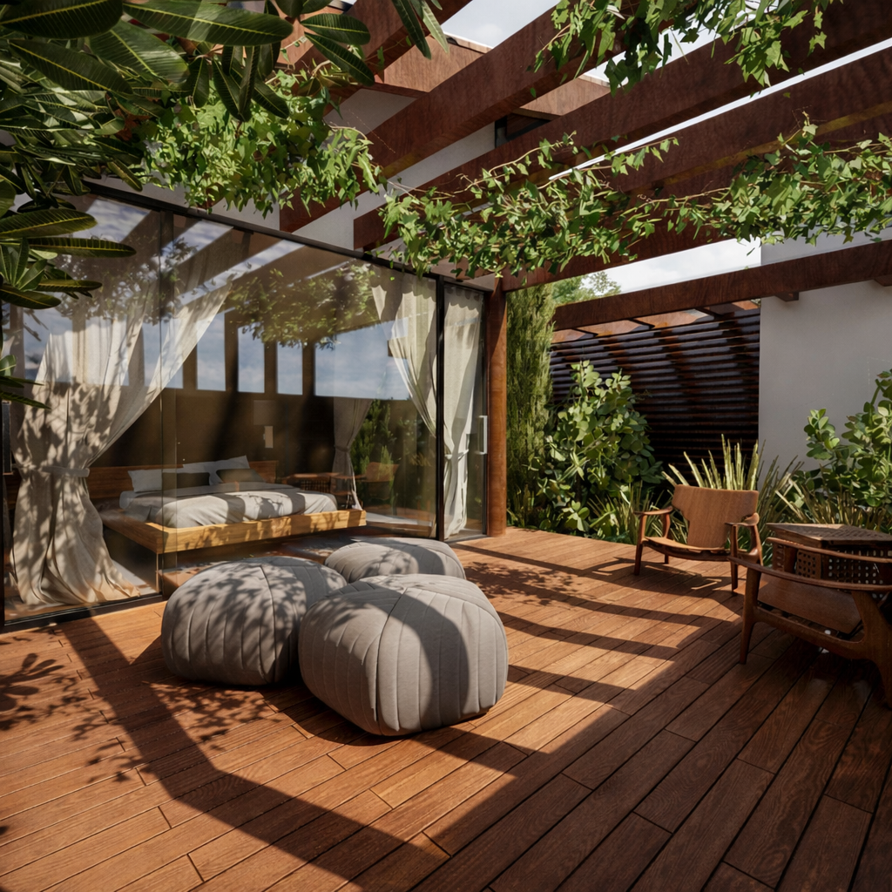
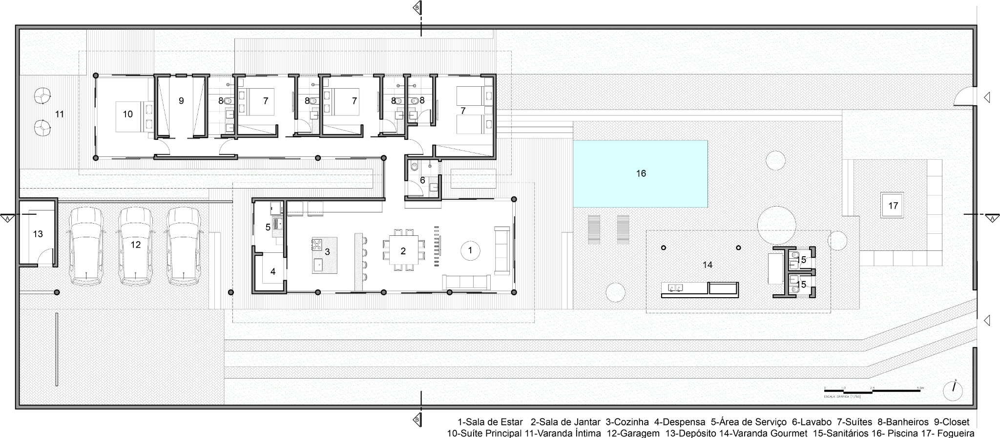

Projeto residencial
Arquitetura marcada pela estrutura em madeira, grandes planos de vidro e integração entre áreas de convivência, lazer e paisagismo.




Clique nas imagens para abrir o arquivo original em resolução integral.
Projeto
A implantação e a organização dos ambientes podem ser observadas em conjunto antes da leitura do processo de concepção.

Processo
O diagrama apresenta, etapa a etapa, a evolução volumétrica e as principais decisões de implantação e organização espacial. As sete imagens permanecem separadas para preservar a leitura e a resolução de cada etapa.